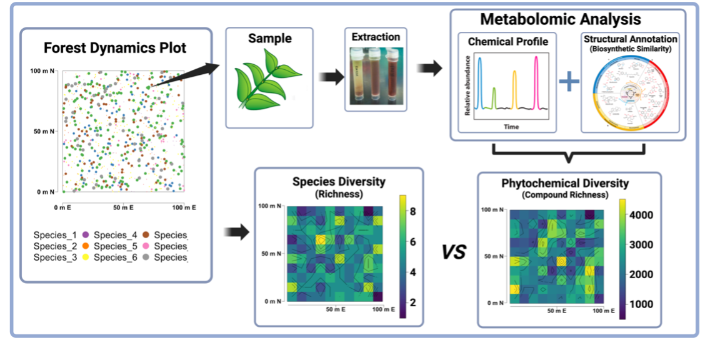
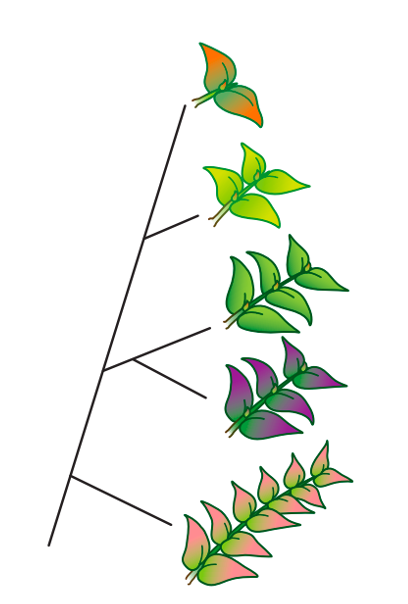
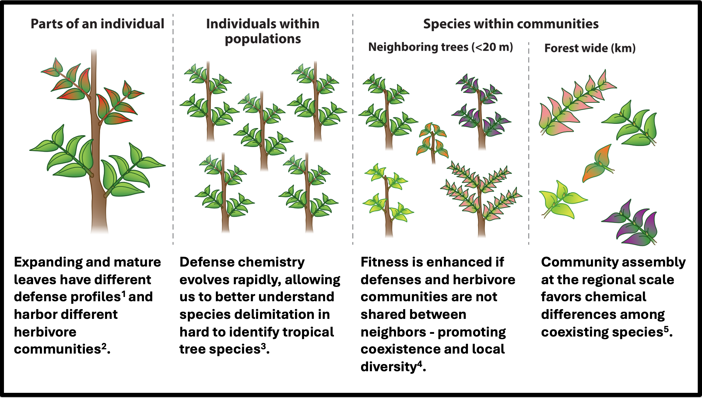
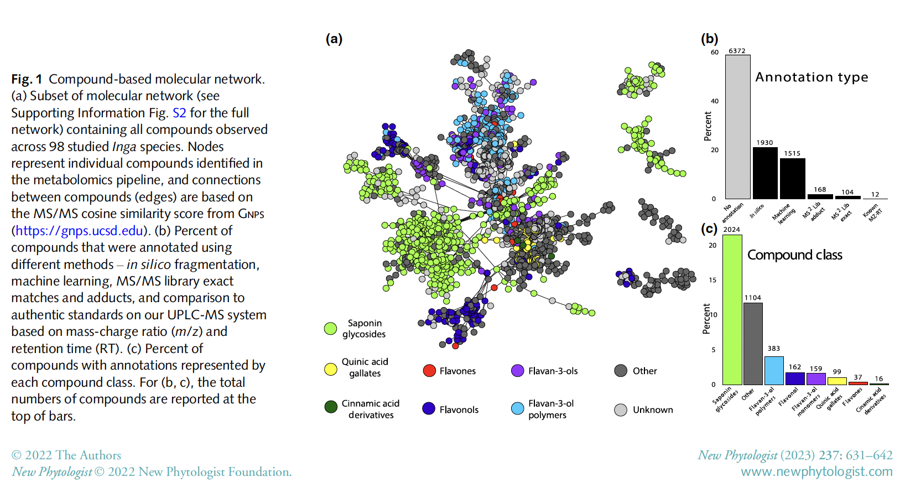
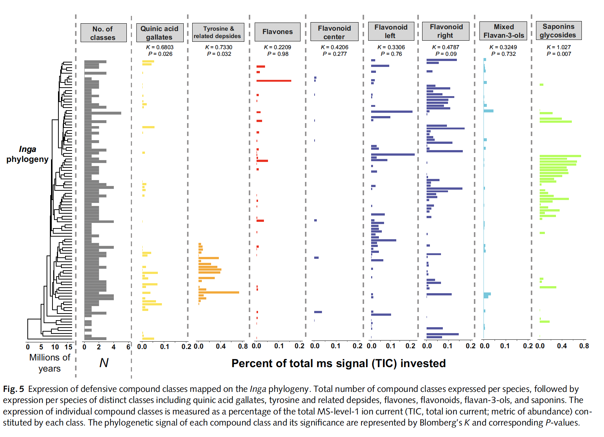
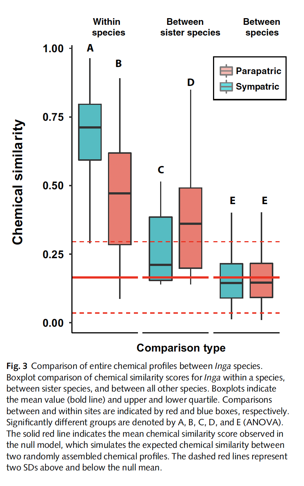
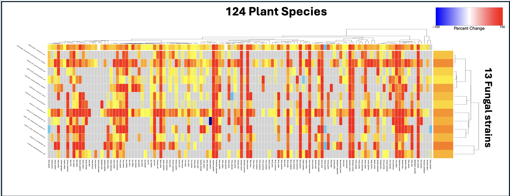

I'm an evolutionary biologist and chemical ecologist based at the University of Texas at Austin, where I’m a Stengl-Wyer Postdoctoral Scholar.
Read about my fellowship and my journey to UT Austin here.
Explore this site to learn more about my research, publications, and teaching.
Exploring the chemistry of life in tropical forests
My research aims to understand how plant secondary metabolism shapes ecological interactions and biodiversity in tropical forests and across regional to global gradients.
Ecometabolomics and the Phytochemical Landscape

How does phytochemical diversity evolve?

Functional-Metabolomics (HTS + MS)
Ecometabolomics and the Phytochemical Landscape
Fig. 1. Quantifying the phytochemical landscape using forest dynamics plots and ecometabolomics.
Plants are nature’s chemical factories, drawing 120–160 gigatons of CO₂ annually from the atmosphere and converting it into the world’s forests and grasslands. Beyond building ~80% of global biomass, plants generate over a million specialized metabolites that shape survival, evolution, and species interactions. Life navigates this dynamic phytochemical landscape, where chemical diversity links trophic interactions with nutrient dynamics.
My work uses untargeted mass spectrometry, high-performance computing, machine learning, and modern metabolomics annotation pipelines to quantify chemical variation across spatial and temporal scales (Fig. 1). Together, this ecometabolomics framework brings the phytochemical landscape into focus (Fig. 2).

Fig. 2. Studies quantifying chemical variation across increasing spatial and temporal scales. Adapted from Endara, Forrister & Coley (2023). Annu. Rev. Ecol. Evol. Syst. 54:107–27.
Relevant papers
Endara, M.J., Soule, A.J., Forrister, D.L., Dexter, K.G., Pennington, R.T., Nicholls, J.A., et al. (2022). The role of plant secondary metabolites in shaping regional and local plant community assembly. J. Ecol. 110: 34–45.
Forrister, D.L., Endara, M.J., Younkin, G.C., Coley, P.D. & Kursar, T.A. (2019). Herbivores as drivers of negative density dependence in tropical forest saplings. Science 363: 1213–1216.
Schneider, G.F., Coley, P.D., Younkin, G.C., Forrister, D.L., Mills, A.G. & Kursar, T.A. (2019). Phenolics lie at the centre of functional versatility in responses of two phytochemically diverse tropical trees to canopy thinning. J. Exp. Bot. 70: 5853–5864.
Endara, M.J., Coley, P.D., Wiggins, N.L., Forrister, D.L., Younkin, G.C., Nicholls, J.A., et al. (2018). Chemocoding as an identification tool where morphological- and DNA-based methods fall short: Inga as a case study. New Phytol. 218: 847–858.
Forrister, D.L., Tarco, S.L., Donoso, D.A., Garwood, N.C., Valencia, R., Coley, P.D. & Endara, M.-J. (unpub.). Leafing phenology and insect seasonality in an ever-wet tropical forest. Doctoral dissertation, University of Utah.
Wiggins, N.L., Forrister, D.L., Endara, M.J., Coley, P.D. & Kursar, T.A. (2016). Quantitative and qualitative shifts in defensive metabolites define chemical defense investment during leaf development in Inga. Ecol. Evol. 6: 478–492.
How does phytochemical diversity evolve? Inga as a model for defense evolution
The Neotropical tree genus Inga (>300 species) is a powerful model for studying the
evolution of chemical defenses. Using metabolomics and phylogenetic comparative methods,
we showed that closely related Inga species often have highly divergent chemical profiles,
with individual compounds and compound classes showing little-to-no phylogenetic signal.


Fig. Overview of Inga chemical diversity observed in Inga species.
This pattern supports a model of divergent adaptation, where natural selection from
specialist herbivores and pathogens drives coexisting species to evolve distinct defensive
chemistries. Rather than gradually elaborating on shared pathways, Inga species maximize
phytochemical diversity by producing structurally unrelated metabolites.

Fig. Divergent chemical defenses in Inga: coexisting and closely replated species evolve
highly divergent metabolomes to avoid shared enemies.
Mechanistically, this diversity likely arises from two processes:
(1) “Lego-chemistry” — flexible biosynthetic enzymes assembling novel compounds from
shared precursors, and
(2) regulatory evolution — changes in gene expression that turn biosynthetic pathways
on or off, enabling even sister species to deploy different classes of compounds.
Relevant papers
Forrister, D.L., Endara, M.J., Soule, A.J., Younkin, G.C., Mills, A.G., Lokvam, J.,
Dexter, K.G., Pennington, R.T., Kidner, C.A., Nicholls, J.A., Loiseau, O., Kursar, T.A. &
Coley, P.D. (2023). Diversity and divergence: evolution of secondary metabolism in the tropical
tree genus Inga. New Phytologist 237: 631–642. doi:10.1111/nph.18554.
Coupling untargeted metabolomics with high-throughput screening (HTS) lets us move beyond
“lists of features” to ask what plant secondary metabolites actually do. By assaying biological activity in
parallel with LC–MS/MS, we can map function onto chemistry, identify bioactive fractions, and
link signals back to molecules and pathways.
Current dataset. We’ve screened crude extracts from
125 plant species against 13 fungal pathogens that span ecological niches.
This design lets us quantify how toxicity (bioactivity) and investment in defense
vary across environmental and phylogenetic gradients, and how community context shapes the selective landscape
for plant defenses. (Manuscript in preparation.)

Fig. Example HTS readout: activity heatmap (species × fungal pathogens) highlighting
clade- and environment-associated defense syndromes.
Future directions. I am working to scale this approach to functionally annotate the metabolome by:
(i) expanding HTS to additional organisms including bacteria, fungal drug targets and insect cell lines, (ii) (iii) using machine learning to
relate in vitro effects to metabolite classes and biosynthetic pathways. The goal is a
function-aware phytochemical atlas that connects molecules to ecological outcomes.